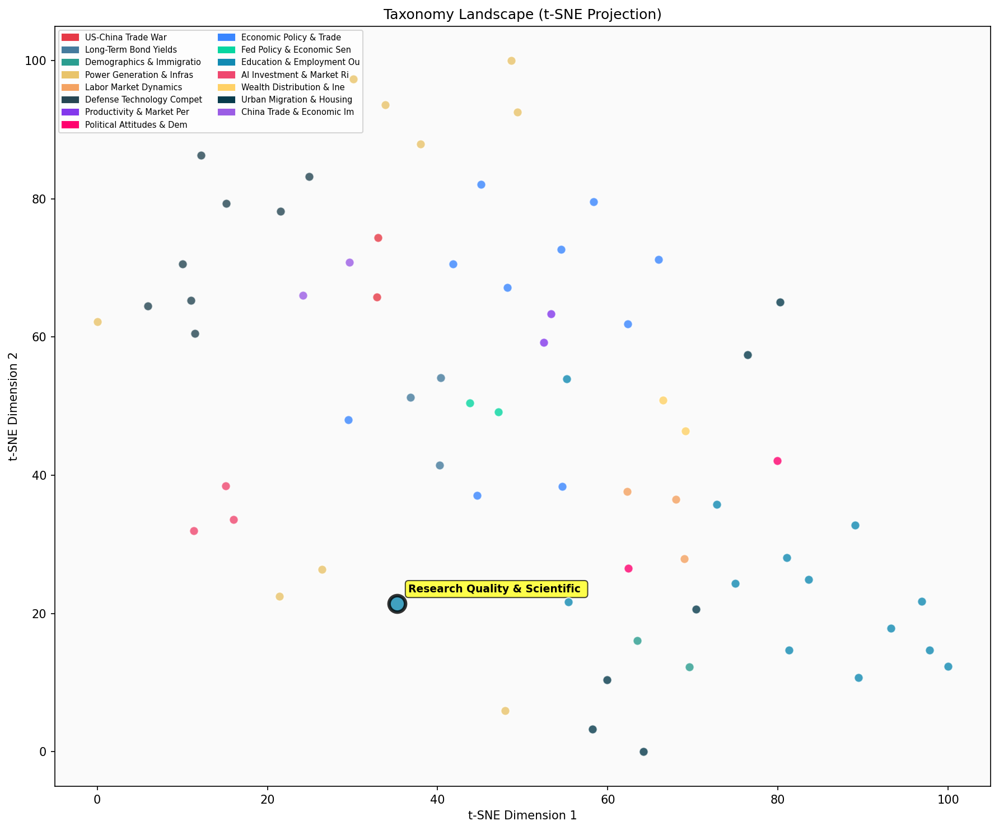

Description
This subcluster examines systemic problems in academic research quality and scientific integrity that impact economic and educational policy decisions. Articles focus on replication crises, research misconduct, publication bias, and methodological flaws across disciplines. Common sources include peer-reviewed journals like Nature and Science Advances, meta-analyses of research practices, and statistical examinations of publication patterns. Unlike sibling subclusters that analyze educational outcomes or labor market performance directly, this group critiques the underlying research infrastructure that informs those analyses, highlighting how flawed studies, retracted papers, and politicized science compromise evidence-based policymaking in education and employment sectors.
Similarity to All 70 Subclusters
Each cell represents a subcluster. Color intensity shows similarity (blue=low, red=high). Black line marks current subcluster position.
Relationship to Primary Clusters
Average similarity to each of the 15 primary clusters. Larger area = stronger relationship to that cluster.
Taxonomy Landscape
All 70 subclusters positioned by similarity (t-SNE). Current subcluster highlighted with label. Click to enlarge.
Network Connections
Current subcluster at center, connected to related subclusters. Line thickness = similarity strength.
Most Representative Articles
-
1. A 12-point checklist for when to doubt a scientific consensus: recent analyses reveal significant is
-
2. A recent study found 10-20% of results in top American journals may be questionable, raising concern
-
3. Only 39% of psychology papers published in 2015 were replicable, highlighting a significant issue in
-
4. Research in @ScienceAdvances finds papers that fail to replicate receive more citations than those t
-
5. A review of nearly 7,000 empirical economics studies found 90% of studies in half of research areas
Edge Cases (Boundary Articles)
-
1. Diversity in communities correlates with a decline in social capital, impacting civic engagement & tThis article is borderline for the "Research Quality & Scientific Reproducibility Crisis" cluster because while it presents statistical claims about social capital and diversity that could relate to research quality issues, it focuses primarily on sociological findings about community engagement rather than examining problems with academic research methodology, replication failures, or scientific integrity. The article would be better suited for the "Gender & Age Political Preference Gaps" cluster since it directly addresses civic engagement patterns and voting behavior, which are core political participation topics.
-
2. The inspection paradox distorts sample data by overrepresenting larger groups, leading to biased aveThis article is borderline because while it discusses a statistical bias that could contribute to research quality issues, it focuses primarily on a specific sampling methodology problem (the inspection paradox) rather than the broader systemic issues of scientific reproducibility, replication crises, or research misconduct that define the cluster's core theme. The article's emphasis on statistical measurement accuracy makes it more aligned with technical analysis methods than with the institutional and procedural problems affecting scientific integrity.
-
3. Researchers who narrowly missed securing grants but persisted in reapplying outperformed those who sThis article is borderline because while it touches on research quality metrics (citations and high-impact papers), it's primarily about grant funding outcomes and researcher performance rather than the core issues of scientific reproducibility, replication crises, or research integrity that define the assigned cluster. The content aligns more closely with performance analysis and management evaluation, which explains its higher similarity to the Management & Performance Analysis cluster.
Original Dendrogram